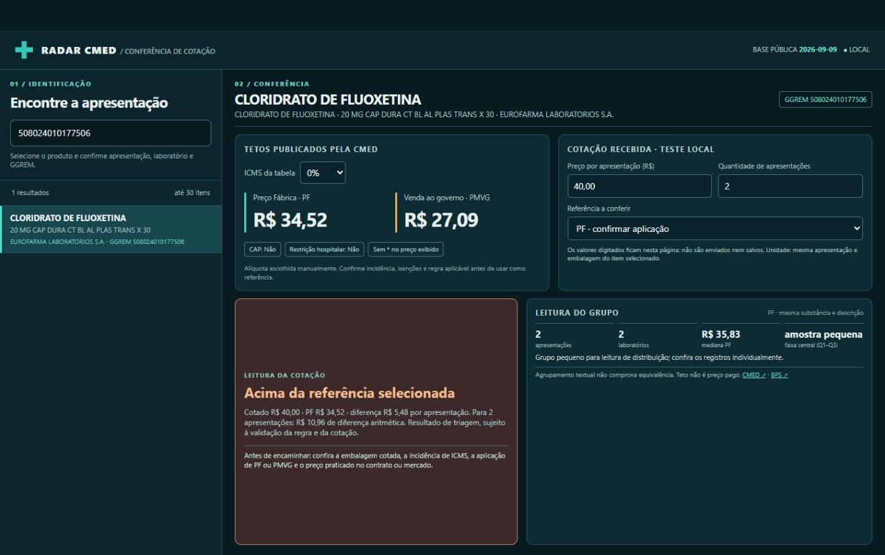

Radar CMED
Conferir uma cotação hospitalar exige identificar a apresentação correta antes de comparar preços.
A comparação começa pela apresentação
O nome do medicamento não basta. Concentração, forma farmacêutica, embalagem e referência de preço precisam permanecer juntas para evitar uma comparação incorreta.
A regra ficou junto do cálculo
O painel consulta a lista pública da Anvisa por GGREM, apresenta PF e PMVG na alíquota selecionada e calcula a diferença da cotação para a referência escolhida.
O painel apoia a conferência
A entrega reúne identificação, teto regulado e diferença da cotação em uma mesma leitura. Ela organiza a triagem, mas não substitui a validação comercial nem decide a compra.
Construção
Tratamento da planilha CMED em Python, interface em HTML, CSS e JavaScript e testes dos cálculos apresentados.
